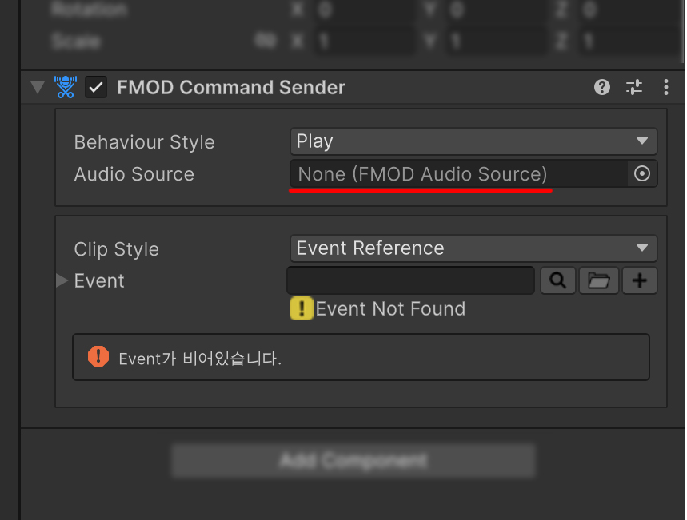

Command Sender
CommandSender는 Inspector에 구성한 명령을 FMODAudioSource 또는 FMOD Studio System으로 전달합니다. UnityEvent나 FMODEventTrigger에서 하나의 SendCommand()만 호출하면서 재생, 정지, Key Off, Local Parameter, Global Parameter 동작을 선택할 수 있습니다.
Command Sender 만들기
다음 두 방법 중 하나로 CommandSender를 추가합니다.
- GameObject > Audio > FMOD > Command Sender를 선택합니다.
- 기존 GameObject의 Add Component에서 FMOD Studio > FMOD Plus > FMOD Command Sender를 선택합니다.

Global Parameter를 제외한 명령은 대상 FMODAudioSource가 필요합니다. 가장 기본적인 구성은 Audio Source 필드에 직접 연결하는 것입니다.

Behaviour 종류
| Behaviour | 대상 | 동작 |
|---|---|---|
| Play | FMOD Audio Source | Event를 선택하고 Parameter를 적용한 뒤 재생합니다. |
| Stop | FMOD Audio Source | Fade 선택과 함께 현재 Event를 정지합니다. |
| Key Off | FMOD Audio Source | 현재 Event의 Sustain Point를 해제합니다. |
| Parameter | FMOD Audio Source | 현재 Event에 Local Parameter를 적용합니다. |
| Global Parameter | FMOD Studio System | 프로젝트 전역 Parameter 값을 변경합니다. |
CommandSender에는 Pause 또는 Mute Behaviour가 없습니다. 해당 동작은 FMODAudioSource.Pause()와 mute를 직접 사용합니다.
Send On Awake
Send On Awake는 이름과 달리 Awake가 아니라 OnEnable에서 SendCommand()를 호출합니다.

- GameObject가 처음 활성화될 때 명령을 보냅니다.
- 비활성화 후 다시 활성화하면 명령을 다시 보냅니다.
- 대상이나 Key를 런타임에 연결한다면 연결이 끝나기 전 실행되지 않도록 이 옵션을 끄거나 실행 순서를 구성해야 합니다.
SendCommand 직접 호출
코드에서는 Behaviour와 Inspector 설정을 그대로 사용하여 SendCommand()만 호출합니다.
using FMODPlus;
using UnityEngine;
public class CommandButton : MonoBehaviour
{
[SerializeField] private CommandSender commandSender;
public void Execute()
{
commandSender.SendCommand();
}
}
Unity UI Button이나 UI Toolkit의 UnityEvent에는 CommandSender.SendCommand를 연결합니다. 명령이 복잡해져도 호출 측은 같은 메서드를 유지할 수 있습니다.
Event Trigger와 연결하기
FMODEventTrigger의 Trigger Type을 Command Sender로 설정하고 Command Sender 필드에 대상 Sender를 연결합니다. 선택한 Send Event가 발생하면 SendCommand()가 호출됩니다.

Command Sender Target에서는 Event Trigger의 Stop Event를 사용하지 않습니다. Trigger로 정지하려면 Behaviour가 Stop인 별도의 Command Sender를 만들고 원하는 Event에 연결하세요.
자세한 Event 조건은 Event Trigger를 참고하세요.